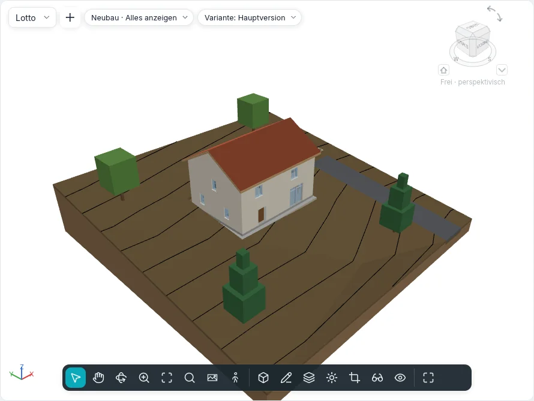

Lageplan und Gelände
Der Boden, auf dem das Gebäude steht, und die Zeichnungen des Grundstücks ringsum entstehen mit Körper & Gelände ▸ Gelände und Gelände bearbeiten. Sie arbeiten in Grundrissen und im Lageplan; ein Gelände und ein Bauplatz werden auch in 3D-Ansichten skizziert, auf der Ebene ihres Geschosses.

Gelände
Ein Gelände ist ein Volumenkörper: ein skizzierter Umriss (mit Öffnungen) auf einer Ebene, geformt durch Punkte, mit den Schichten und der Dicke seines Typs.
Gelände ▾ hat zwei Wege:
| Weg | Wie es arbeitet |
|---|---|
| Aus Skizze erstellen | Skizzenmodus Geländebegrenzung erstellen, mit der gemeinsamen Gruppe Zeichnen (Linien, Rechteck, Polygone, Kreis, Bögen, Linien wählen). Eine geschlossene Schleife zeichnen; eine Schleife darin ist eine Öffnung. Bearbeitungsmodus beenden erstellt ein ebenes Gelände, seine Oberkante auf Höhenversatz von Ebene |
| Aus Import erstellen | Der Dialog Punkte aus ausgewählten Layern hinzufügen: die Layer einer mit Höhen importierten DWG- oder DXF-Datei (3D-Linien und Punkte), deren Punkte das Gelände formen, oder Aus Punktdatei erstellen… (CSV oder TXT, die Einheit in Format gewählt) |
Eine Punktdatei gibt in jeder Zeile zuerst x, y und z an; Namen und weitere Spalten werden übersprungen, und von zwei Punkten mit gleichem x, y bleibt das höhere z. Über der Grenze der Geländeeinstellungen (standardmäßig 20.000 Punkte, 10.000–50.000) werden die Punkte auf diese Grenze ausgedünnt, und eine Meldung sagt, wie viele geblieben sind.
Formbearbeitung
Ein ausgewähltes Gelände zeigt die Gruppe Formbearbeitung:
| Werkzeug | Wie es arbeitet |
|---|---|
| Punkt hinzufügen | In den Umriss klicken. In der Optionsleiste: Absolut (die eingegebene Höhe, ab dem Höhenbezug: aktuelle Ebene, Projektbasispunkt, Vermessungspunkt, interner Ursprung) oder Relativ zur Oberfläche (ein Versatz über oder unter der Oberfläche an der Klickstelle); XYZ-Fang übernimmt die Höhe einer Geschossdeckenecke oder eines Wandendes, plus Versatz von Fangpunkten |
| Unterelemente ändern | Einen Punkt anklicken: im Grundriss ziehen oder seine Höhe über der ursprünglichen Oberkante des Geländes eingeben |
| Teilungslinie hinzufügen | Zwei Klicks: ein Knick der Oberfläche, gerade zwischen ihren Höhen |
| Form zurücksetzen | Entfernt alle Punkte und Teilungslinien |
| Gelände vereinfachen | Behält einen Anteil der Punkte (1 000 Punkte mit 70 % werden 700) |
Die Oberfläche wird durch den Umriss und die Punkte trianguliert; die Höhenlinien folgen sofort.
Typ, Schichten und Höhenlinien
Der Typ des Geländes hat sein Tragwerk im selben Dialog Typschichten wie Wände und Geschossdecken: die als Variabel markierte Schicht nimmt die Form auf, so bleibt die Unterseite eben. Höhenlinienanzeige (Höhenlinienanzeige in der Palette des Geländes) listet Gruppen von Höhenlinien: Anfang, Ende, Inkrement, Einzelwert oder Mehrere Werte, den Linienstil (Haupt-, Nebenlinien, verdeckte Linien, Kanten der Triangulation) und ein Kontrollkästchen, um eine Gruppe auszuschalten. Ein neues Projekt zeichnet Haupthöhenlinien alle 5 m und Nebenlinien jeden Meter; die Typen Asphaltstraße, Kiesweg und Gehweg zeichnen keine.
Die Höhenlinien erscheinen auch in 3D-Ansichten auf dem Gelände, in ihren Linienstilen, und sind verdeckt, wo das Gebäude davor steht.
Im Schnitt wird das Gelände mit seinen Schichten und den Mustern ihrer Materialien geschnitten. Eine auf dem Gelände platzierte Höhenkote liest dort seine Höhe ab.
Sichtbarkeit und Grafik ▸ Gelände hat die Unterkategorien Haupthöhenlinien, Nebenhöhenlinien, Verdeckte Linien, Knicklinien, Begrenzungspunkte und Innere Punkte; die letzten drei sind aus, bis man sie einschaltet.
Geländeoptionen ▾ ▸ Glatte Geländeschattierung macht jedes Gelände in den schattierten Stilen glatt.
Geländeoptionen ▾ ▸ Stabilität des Abtragshohlraums: ein Abtrag, der nicht ganz gelingt, wird mit um einige Millimeter in x oder y verschobener Kontur wiederholt; Abtragen sagt, wie viele Abträge verschoben wurden.
Gelände bearbeiten
| Werkzeug | Wie es arbeitet |
|---|---|
| Teilbereich | Eine Schleife auf dem ausgewählten Gelände skizzieren (oder zuerst ein Gelände anklicken). Sein Typ gibt sein Material; Teilbereichsversatz hebt ihn an (ein Bordstein) oder senkt ihn in das Gelände, das ihn trägt (mit seinem Abtragsvolumen) |
| Gelände teilen | Das Gelände anklicken, dann eine geschlossene Schleife darin oder offene Linien von Rand zu Rand skizzieren. Ein Teilbereich, den die Teilung nicht behalten kann, fragt nach Exemplare löschen |
| Gelände zusammenführen | Das Hauptgelände anklicken, dann das zweite: sie müssen eine Kante teilen oder sich überlappen. Punkte entlang gemeinsamer Kanten entfernen ist standardmäßig an |
| Abtragen / Abtrag entfernen | Mit ausgewähltem Gelände eine Geschossdecke, ein Dach, einen Bauplatz oder ein anderes Gelände anklicken, das es durchdringt. Einzelnes Abtragsvolumen listet jeden Einschnitt |
| Geländemodellierung | Planierten Bereich bearbeiten fragt nach einer genauen Kopie oder nur den Punkten des Umrisses; ein Gelände einer früheren Phase anklicken. Es wird in der aktuellen Phase abgebrochen, und seine Kopie, neu, öffnet sich in der Formbearbeitung. Die Kopie meldet Abtrag, Auftrag und Netto Abtrag/Auftrag |
Eine Bauteilliste der Gelände listet Abtrag und Auftrag, mit einer Gesamtsumme.
Bauplatz
Bauplatz skizziert eine geschlossene Schleife über einem Gelände (Sohlplattenbegrenzung erstellen, mit Wände auswählen und Neigungspfeil). Seine Oberkante liegt auf Höhenversatz von Ebene; das Gelände darunter wird bis zu seiner Unterseite abgetragen oder aufgefüllt. Sein Typ hat ein Tragwerk aus Schichten und das Füllmuster der niedrigen Detailgenauigkeit.
Geländeelemente und Parkplätze
Geländeelement platziert Bäume, Sträucher, Bänke, Straßenlaternen und Hydranten, eines pro Klick (Leertaste zum Drehen); Parkplatz platziert Stellplätze (90°, 60°, 45°, parallel, barrierefrei). Beide stehen auf dem Gelände oder Teilbereich unter dem Klick und folgen ihm, wenn es sich ändert. Neues Basisbauteil wählen setzt sie auf ein anderes Gelände oder einen anderen Teilbereich; In Reihe wiederholen bildet Reihen davon.
Grundstücksgrenzen
Grundstücksgrenze fragt, wie sie erstellt wird:
- Durch Skizzieren erstellen: die Linien des Skizzenmodus; eine offene Schleife warnt, dass ihre Fläche nicht berechnet werden kann (erneut beenden, um sie offen zu lassen);
- Durch Eingabe von Abständen und Richtungen erstellen: die Tabelle Grundstücksgrenzen, eine Zeile pro Abschnitt mit Abstand, Richtung (wie N 45°00'00" E), Typ (Linie oder Bogen), Radius und L/R; Einfügen, Löschen, Nach oben, Nach unten und Schließen, das den Abschnitt zurück zum Anfang hinzufügt. Die Abschnitte folgen dem geografischen Norden.
Eine ausgewählte Grundstücksgrenze zeigt Tabelle bearbeiten. Geländeoptionen ▾ ▸ Grundstücksdaten setzt die Winkelanzeige (Richtung oder Grad) und die Einheiten. Grundstücksgrenzen sind standardmäßig in Lageplänen und 3D-Ansichten sichtbar; eine Bauteilliste der Grundstücksgrenzen listet ihren Namen und ihre Fläche.
Höhenlinienbeschriftungen
Höhenlinienbeschriftung: Anfang und Ende einer Linie quer über die Höhenlinien anklicken; jede Höhenlinie, die sie kreuzt, zeigt ihre Höhe, gedreht, um von Projektnord aus lesbar zu sein. Der Typ der Beschriftung legt den Text fest und ob nur Haupthöhenlinien beschriftet werden.
Der Lageplan
Jedes neue Projekt hat einen Lageplan; Ansichten ▸ Grundriss ▾ ▸ Lageplan erstellt einen weiteren, für die aktive Ebene: 1:200, geschnitten über dem Gebäude bis 10 m unter der Ebene, ausgerichtet nach Geografischer Norden. Ausrichtung in seinen Eigenschaften stellt ihn zurück auf Projektnord.
Geländeeinstellungen
Geländeoptionen ▾ ▸ Geländeeinstellungen enthält die Höhenlinien des Projekts (für die Geländetypen, die keine eigenen festlegen), das Material im Schnitt und die Schnittkörper-Tiefe der Geländetypen ohne Schichten, die Grundstücksdaten und die höchste Anzahl Punkte, die ein Import behält.
Noch nicht
Gelände aus Fläche, Topografie verknüpfen und Umgebung kommen in einer späteren Phase.